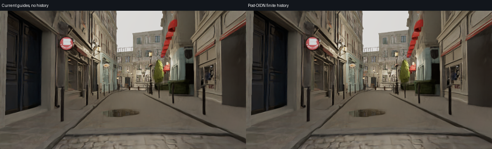

左：当帧可靠区域、无历史；右：同一空间结果加前两帧几何重投影。 每帧单独选择引导区域，不使用整段屏幕坐标交集。透明、水和雨沿当前路径；历史只用于可靠不透明背景。原生640×360，播放速度不代表渲染性能。
0
Frame 0: 引导支持 11520 像素，历史支持 0 像素。输出 · 无历史控制 · 历史权重 · 引导权重
Frame 1: 引导支持 11520 像素，历史支持 146239 像素。输出 · 无历史控制 · 历史权重 · 引导权重
Frame 2: 引导支持 11520 像素，历史支持 155103 像素。输出 · 无历史控制 · 历史权重 · 引导权重
Frame 3: 引导支持 11520 像素，历史支持 154263 像素。输出 · 无历史控制 · 历史权重 · 引导权重
Frame 4: 引导支持 11520 像素，历史支持 157482 像素。输出 · 无历史控制 · 历史权重 · 引导权重
Frame 5: 引导支持 11520 像素，历史支持 156218 像素。输出 · 无历史控制 · 历史权重 · 引导权重
Frame 6: 引导支持 11520 像素，历史支持 155647 像素。输出 · 无历史控制 · 历史权重 · 引导权重
Frame 7: 引导支持 11520 像素，历史支持 155724 像素。输出 · 无历史控制 · 历史权重 · 引导权重
Frame 8: 引导支持 11520 像素，历史支持 157090 像素。输出 · 无历史控制 · 历史权重 · 引导权重
Frame 9: 引导支持 11520 像素，历史支持 157342 像素。输出 · 无历史控制 · 历史权重 · 引导权重
Frame 10: 引导支持 11520 像素，历史支持 157943 像素。输出 · 无历史控制 · 历史权重 · 引导权重
Frame 11: 引导支持 11520 像素，历史支持 157570 像素。输出 · 无历史控制 · 历史权重 · 引导权重
Frame 12: 引导支持 11520 像素，历史支持 160971 像素。输出 · 无历史控制 · 历史权重 · 引导权重
Frame 13: 引导支持 11520 像素，历史支持 158459 像素。输出 · 无历史控制 · 历史权重 · 引导权重
Frame 14: 引导支持 11520 像素，历史支持 160721 像素。输出 · 无历史控制 · 历史权重 · 引导权重
Frame 15: 引导支持 11520 像素，历史支持 158664 像素。输出 · 无历史控制 · 历史权重 · 引导权重
Frame 16: 引导支持 11520 像素，历史支持 160979 像素。输出 · 无历史控制 · 历史权重 · 引导权重
Frame 17: 引导支持 4864 像素，历史支持 160786 像素。输出 · 无历史控制 · 历史权重 · 引导权重
Frame 18: 引导支持 4864 像素，历史支持 162470 像素。输出 · 无历史控制 · 历史权重 · 引导权重
Frame 19: 引导支持 5888 像素，历史支持 160906 像素。输出 · 无历史控制 · 历史权重 · 引导权重
Frame 20: 引导支持 6144 像素，历史支持 164532 像素。输出 · 无历史控制 · 历史权重 · 引导权重
Frame 21: 引导支持 5888 像素，历史支持 163137 像素。输出 · 无历史控制 · 历史权重 · 引导权重
Frame 22: 引导支持 2432 像素，历史支持 163729 像素。输出 · 无历史控制 · 历史权重 · 引导权重
Frame 23: 引导支持 5760 像素，历史支持 165258 像素。输出 · 无历史控制 · 历史权重 · 引导权重